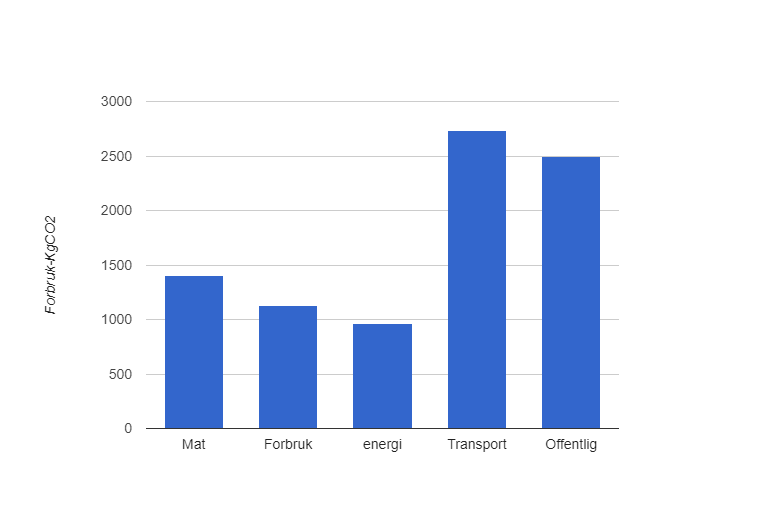

Jeg er 25 år gammel og kommer fra Skien
Pyret kodeSøylediagrammet viser mitt kgCO2 utslipp per år. Diagrammet viser at jeg har størst utslipp på transport og offentlig. Grunnen til at utslippet er størst på transport er fordi jeg drar til og fra Skien flere ganger i året, samt drar på utenlandsturer med fly.
